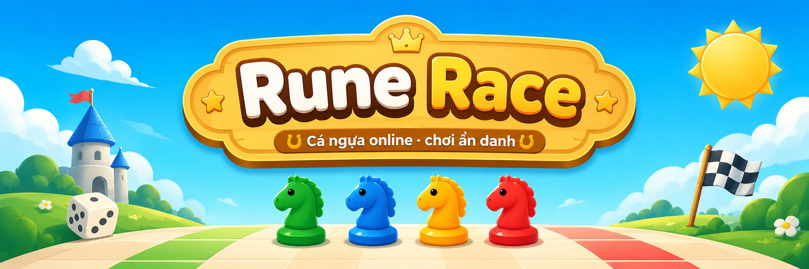

Marker bí mật
Rune được rải trên đường đi chung. Người khác thấy marker nhưng không biết đó là hỗ trợ hay bẫy.
Một ván Cá ngựa online sẽ không còn chỉ phụ thuộc vào xúc xắc. Rải Rune bí mật, giả danh đối thủ và tạo ra những pha lật kèo khiến cả nhóm bạn phải bật cười.

Rune Race giữ lại sự thân thuộc của Cá ngựa, nhưng thêm các quyết định chiến thuật và yếu tố tâm lý để mỗi ván có một câu chuyện khác nhau.
Rune được rải trên đường đi chung. Người khác thấy marker nhưng không biết đó là hỗ trợ hay bẫy.
Gắn avatar của người chơi khác lên marker để tạo nghi ngờ, đánh lạc hướng và những màn đổ lỗi vui nhộn.
Tiến, Lùi, Khiên, Đóng Băng và Hoán Vị có thể nối tiếp nhau, biến một lượt đi bình thường thành pha lật kèo.
Mở trình duyệt, tạo phòng và chia sẻ link. Không cần cài đặt phức tạp trước khi bắt đầu.
Từ thẻ hỗ trợ giúp bứt tốc đến bẫy khiến đối thủ lùi bước hoặc về chuồng, mỗi Rune đều có thể thay đổi cục diện.
Mỗi người có 2 quân ngựa. Tung xúc xắc, di chuyển trên đường đi chung và đưa đủ 2 quân về đích để chiến thắng.
Đối thủ có thể vô tình giúp bạn tiến nhanh, hoặc khiến quân sắp về đích bị lùi, đóng băng hay đổi chỗ. Một marker nhỏ cũng đủ tạo ra màn lật kèo.
Vào Rune Race, tạo phòng và gửi link cho bạn bè. Một lượt xúc xắc có thể mở đầu cho cả chuỗi lật kèo.